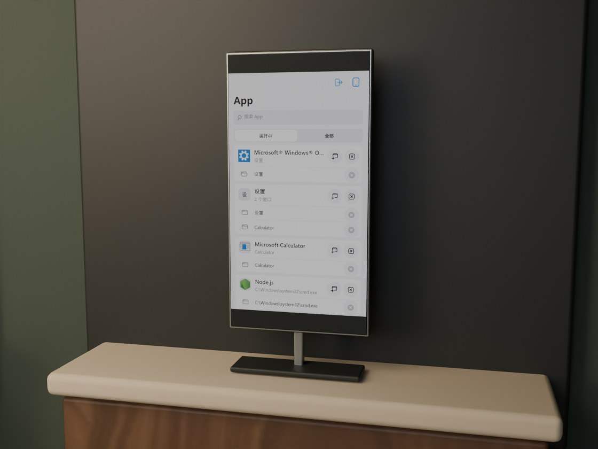
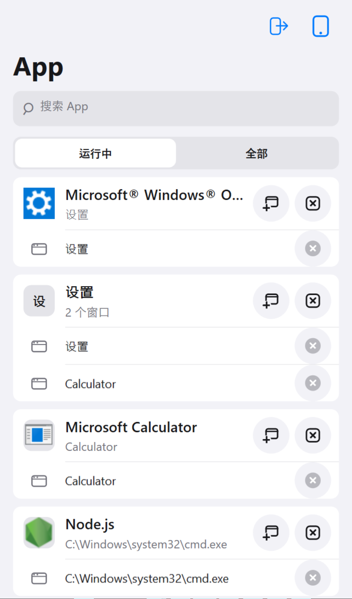

Snug for Windows
探索让 Windows 电脑在手机竖屏上拥有更自然远程操作体验的社区移植项目。

Product.
在手机上远程操作桌面电脑时，横屏比例与精细点击常常形成摩擦。Snug for Windows 基于上游 Snug 思路进行 Windows 社区移植，围绕 UU Remote 场景探索竖屏工作空间。
项目记录了真实设备上的验证过程、交互取舍与迭代，并保留对上游项目理念的致谢。
- 面向手机竖屏与单手触控习惯
- 围绕窗口与缩放逻辑进行适配
- 开源协作及真实设备验证
